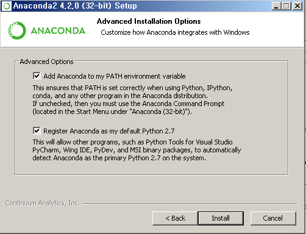
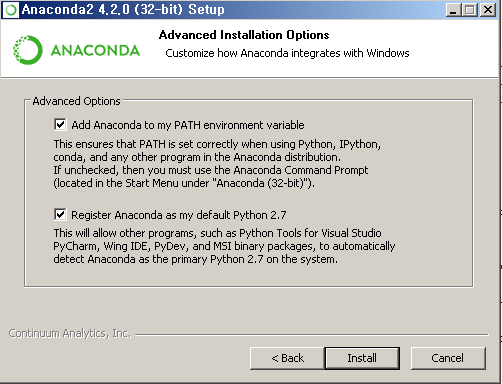

Anaconda 설치
(아나콘다설치) 오른쪽 마우스, 새 탭으로 들어가세요. 주소에 들어가 아래와 같이 클릭하세요.
 

설치하는 데 시간이 좀 걸려요 ㅎㅎ 설치될 때까지 조금 기다려주세요... ㅎㅎ
모두 설치를 하였으면 맨 위에 있는 자료 다운로드(zip)를 통해 파일을 모두 다운받아주세요

시작 창에서 새로 생긴 아나콘다의 폴더에서 Jupyter notebook으로 들어가주세요.

업로드를 들어가 다운 폴더에 들어가, 배우는 챕터를 하나씩 올려서 들어갑니다.

notebook에서 가장 많이 쓰는 단축키에요. Shift B를 통해 창을 생성해 코드를 꼭 코드를 작성하면서 공부를 하세요! h를 눌러 단축키가 무엇이 있는 지 더 알아볼 수 있어요.
Start Python, Machine Learning!
피드백이나 궁금한 사항이 있으면댓글여기에 댓글을 남겨주시면 감사해요ㅎ